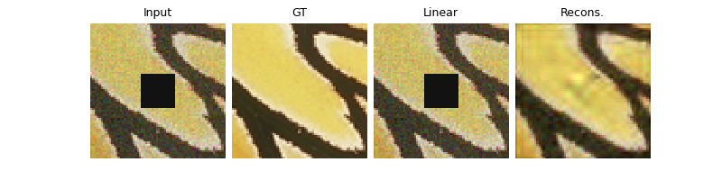
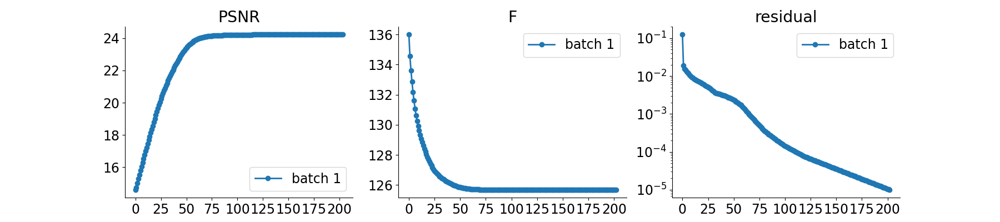

Note
Go to the end to download the full example code.
Image inpainting with wavelet prior
This example shows how to use a standard wavelet prior for image inpainting. The problem writes as \(y = Ax + \epsilon\) where \(A\) is a mask and \(\epsilon\) is the realization of some Gaussian noise. The goal is to recover the original image \(x\) from the blurred and noisy image \(y\). The wavelet prior is used to regularize the problem.
import deepinv as dinv
from pathlib import Path
import torch
from torchvision import transforms
from deepinv.optim.data_fidelity import L2
from deepinv.optim.optimizers import optim_builder
from deepinv.utils.demo import load_dataset, load_degradation
from deepinv.utils.plotting import plot, plot_curves
Setup paths for data loading and results.
BASE_DIR = Path(".")
ORIGINAL_DATA_DIR = BASE_DIR / "datasets"
DATA_DIR = BASE_DIR / "measurements"
RESULTS_DIR = BASE_DIR / "results"
DEG_DIR = BASE_DIR / "degradations"
Load base image datasets and degradation operators.
In this example, we use the Set3C dataset
# Set the global random seed from pytorch to ensure reproducibility of the example.
torch.manual_seed(0)
device = dinv.utils.get_freer_gpu() if torch.cuda.is_available() else "cpu"
# Set up the variable to fetch dataset and operators.
dataset_name = "set3c"
img_size = 256 if torch.cuda.is_available() else 64
val_transform = transforms.Compose(
[transforms.CenterCrop(img_size), transforms.ToTensor()]
)
dataset = load_dataset(dataset_name, ORIGINAL_DATA_DIR, transform=val_transform)
Generate an inpainting problem
We use the Inpainting class from the physics module to generate an images with missing pixels.
noise_level_img = 0.05 # Gaussian Noise standard deviation for the degradation
n_channels = 3 # 3 for color images, 1 for gray-scale images
# Select the first image from the dataset
x = dataset[0][0].unsqueeze(0).to(device)
# Generate a mask for the inpainting problem
mask = torch.ones_like(x)[0]
mask[
...,
x.shape[-2] // 2 - x.shape[-2] // 8 : x.shape[-2] // 2 + x.shape[-2] // 8,
x.shape[-1] // 2 - x.shape[-1] // 8 : x.shape[-1] // 2 + x.shape[-1] // 8,
] = 0
physics = dinv.physics.Inpainting(
tensor_size=(n_channels, img_size, img_size),
mask=mask,
device=device,
noise_model=dinv.physics.GaussianNoise(sigma=noise_level_img),
)
# Apply the degradation to the image
y = physics(x)
Exploring the wavelet prior.
In this example, we will use the wavelet prior, which can be done with the deepinv.optim.prior.WaveletPrior()
class. The prior object represents the cost function of the prior, as well as convenient methods,
such as its proximal operator \(\text{prox}_{\tau \regname}\).
# Set up the wavelet prior
prior = dinv.optim.prior.WaveletPrior(level=4, wv="db8", p=1, device=device)
# Compute the wavelet prior cost
cost_wv = prior(y)
print(f"Cost wavelet: g(y) = {cost_wv:.2f}")
# Apply the proximal operator of the wavelet prior
x_wv = prior.prox(y, gamma=0.1)
cost_wv_prox = prior(x_wv)
Cost wavelet: g(y) = 1830.51
Note
The output of the proximity operator of the wavelet prior is not the solution to our inpainting problem. It is only a step towards the solution and is used in the proximal gradient descent algorithm to solve the inverse problem.
Set up the optimization algorithm to solve the inverse problem.
The problem we want to minimize is the following:
where \(1/2 \|A(x)-y\|_2^2\) is the a data-fidelity term, \(\|\Psi x\|_{1}(x)\) is a sparsity inducing prior for the image \(x\), and \(\lambda>0\) is a regularisation parameters.
We use a Proximal Gradient Descent (PGD) algorithm to solve the inverse problem.
# Select the data fidelity term
data_fidelity = L2()
# Specify the prior (we redefine it with a smaller number of iteration for faster computation)
prior = dinv.optim.prior.WaveletPrior(level=4, wv="db8", p=1, device=device)
# Logging parameters
verbose = True
plot_convergence_metrics = (
True # compute performance and convergence metrics along the algorithm.
)
# Algorithm parameters
lamb = 0.1 # wavelet regularisation parameter
stepsize = 1.0 # stepsize for the PGD algorithm
params_algo = {"stepsize": stepsize, "lambda": lamb}
max_iter = 300
early_stop = True
backtracking = False
# Instantiate the algorithm class to solve the problem.
model = optim_builder(
iteration="DRS",
prior=prior,
data_fidelity=data_fidelity,
early_stop=early_stop,
max_iter=max_iter,
verbose=verbose,
params_algo=params_algo,
backtracking=backtracking,
)
Evaluate the model on the problem and plot the results.
The model returns the output and the metrics computed along the iterations.
For computing PSNR, the ground truth image x_gt must be provided.
x_lin = physics.A_adjoint(y) # linear reconstruction with the adjoint operator
# run the model on the problem.
x_model, metrics = model(
y, physics, x_gt=x, compute_metrics=True
) # reconstruction with PGD algorithm
# clamp the output to the valid range [0, 1]
x_model = x_model.clamp(0, 1)
# compute PSNR
print(f"Linear reconstruction PSNR: {dinv.metric.PSNR()(x, x_lin).item():.2f} dB")
print(f"PGD reconstruction PSNR: {dinv.metric.PSNR()(x, x_model).item():.2f} dB")
# plot images. Images are saved in RESULTS_DIR.
imgs = [y, x, x_lin, x_model]
plot(
imgs,
titles=["Input", "GT", "Linear", "Recons."],
)
# plot convergence curves
if plot_convergence_metrics:
plot_curves(metrics)
- 
- 
Iteration 202, current converge crit. = 9.99E-06, objective = 1.00E-05
Linear reconstruction PSNR: 14.60 dB
PGD reconstruction PSNR: 24.24 dB
Total running time of the script: (0 minutes 2.119 seconds)